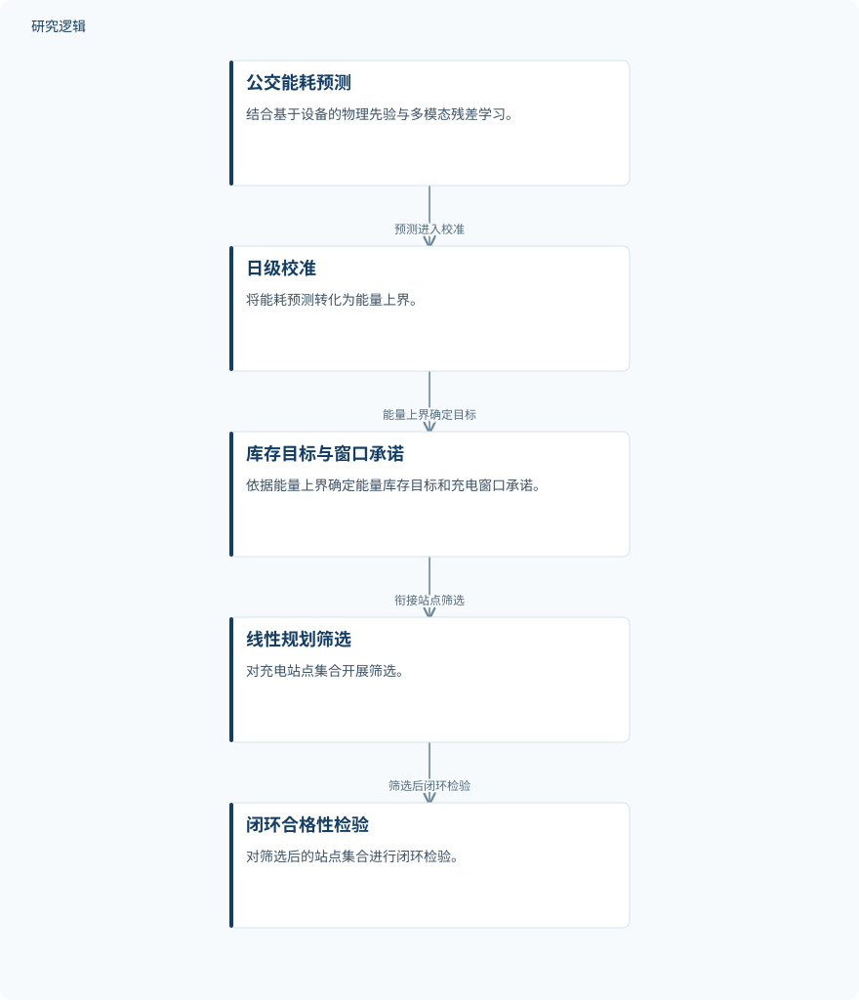

摘要解读
基于科学机器学习的气候自适应电动公交充电基础设施与控制协同设计
Scientific Machine Learning-Based Climate-Adaptive Co-Design of Electric Bus Charging Infrastructure and Control
解读更新 2026-11-10 14:37 · 依据公开摘要整理，未核验全文细节
电动公交充电设施如何少投入，又不牺牲运营中的电量储备？这项研究把气候影响、能耗预测、充电控制与站点选择联动起来，提示一个重要问题：预测最准确的模型，未必带来最可靠的运营结果。
文章目录
气候让能耗预测与充电选址相互牵动
公交运营方既要控制充电基础设施投资，也要利用停站时间补足能量，维持运营所需的电池储备。气候同时改变车辆能量需求与充电接受能力，因此，预测模型不能脱离充电控制和基础设施选择单独评价。
从物理先验预测走向闭环站点检验
作者提出科学机器学习（SciML）协同设计框架，将基于设备的物理先验与多模态残差学习结合，用于预测公交能耗。随后通过日级校准，将预测转化为能量上界，据此确定能量库存目标与充电窗口承诺；站点集合先经线性规划筛选，再接受闭环合格性检验。
研究使用公开天气数据和重构的蒙特利尔、新加坡运营任务，在一种车辆配置下开展连续全年仿真。因此，摘要报告的是仿真中的预测、储备与成本表现，不应直接理解为实际车队部署成效。
依据摘要整理的气候自适应协同设计流程


仅概括摘要明确给出的预测、校准和站点检验关系，不代表论文原图或完整算法配置。
下载 SVG图示关系说明
实线表示相邻阶段的信息流，虚线表示跨阶段联系或反馈。
公交能耗预测 → 日级校准：预测进入校准；日级校准 → 库存目标与窗口承诺：能量上界确定目标；库存目标与窗口承诺 → 线性规划筛选：衔接站点筛选；线性规划筛选 → 闭环合格性检验：筛选后闭环检验
误差排名与储备表现并不一致
使用28天目标域拟合数据和40天校准数据时，从新加坡迁移到蒙特利尔的模型，在2025年的预测误差较全量微调降低5.4%，较梯度提升降低18.7%。移除物理先验与线路网络输入后，误差增至2.3至3.0倍。反向迁移的误差较校准后的物理先验降低58.0%，但仍比梯度提升高11.3%，说明迁移收益具有方向差异。
更值得关注的是，冻结预测器的精度排名与储备结果排名不同。在新加坡2025年的八站设计、固定控制条件下，梯度提升预测误差最低，但每个运营随机种子的损失天数为135.03；迁移模型和校准后的物理先验分别为9.80和0.43。该指标统计超出无预测、全站点参考方案的失败天数，并计入未作承诺的日期，不能简单等同于全部停运天数。
为预测器匹配专属控制后，迁移模型的损失天数由9.80降至0.30。蒙特利尔的闭环检验则恢复了开发阶段最冷日所需的终点站。摘要另报告，通过检验的八站预测设计相对全站点参考方案，将年度充电子系统成本降低28.2%。
仿真结果的适用范围仍需细读
摘要限定了城市、车辆配置及仿真背景，但未交代完整训练样本规模、运营随机种子数量、误差指标定义和统计不确定性，也不足以判断各比较方法的调参与控制条件是否完全可比。其他车辆、线路和气候条件下能否保持收益，以及是否开展实地验证，均无法仅凭摘要确定。
阅读启发：把预测器放回运营决策中
阅读启发：评价面向运营的机器学习模型，不宜只看预测误差，还应追问它如何影响储备约束、控制承诺和设施成本。进一步阅读时，可重点关注损失天数的计算方式、预测器与控制的配对机制，以及最冷日为何改变站点选择；这些细节有助于理解可靠性与经济性之间的取舍。
以上为本站阅读启发与建议，不是论文已验证的结论。